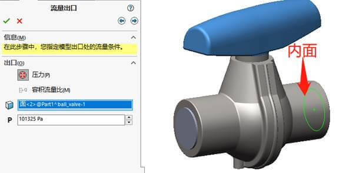

FloXpress入门
SOLIDWORKS FloXpress可了解液体在模型中流动的情况。
优点：
设计仿真一体化；不需要导入或导出。
熟悉的界面和工作流程缩短的学习曲线。
流体域是自动生成的
检查几何体
SOLDWORKS一个入口和出口的单一内部Floxpress可分析带有空腔中的液体。开口必须以顶盖闭合。请确保开口已完全以顶盖闭合。
确保开口已完全以顶盖闭合，【检查几何体】的提示将变成“查看流体体积”。
流体

入口条件
压力：按流体在此处压力为条件
容积流量比：按每秒进入流体的容积为条件设置。
质量流量比：按每秒进入流体的质量为条件设置。

出口条件
压力：按流体在此处压力为条件（注意，出口的压力必须小于入口压力，不然进出口就相反了。）
容积流量比：按每秒进入流体的容积为条件设置。
结果
运行结果的过程是自动的，点击图1计算后，等待图2的计算过程。获得图3的观阅结果查看。

观阅结果播放如下：